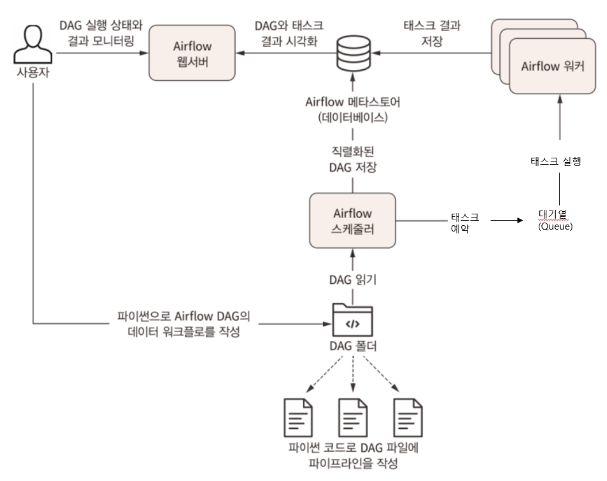

7.1 Introduction to Apache Airflow#

Airflow 란?#
Python 기반의 workflow tool 입니다.
workflow 를 구성하는 방법을 DAG 와 task 라는 단위로 복잡하고 다양하게 구성 가능합니다.
Task: airflow의 operator, etl등의 작업들이 각각의 task가 되며, task간 순서 지정이 가능합니다.DAG(Directes Acyclic Graph): 방향성 비순환 그래프로 데이터파이프라인 하나의 단위, 하나의 DAG에는 하나 이상의 task로 구성됩니다.Airflow는 데이터 파이프라인의 태스크를 예약하고 결과를 모니터링하는
웹 서버,스케줄러및워커 프로세스라는 세 가지 주요 컴포넌트로 구성!
데이터 파이프라인을 관리하기 위한 Airflow#
💡 데이터 파이프라인은
방향성 비순환 그래프(DAG)에Task와 이에 대한의존성을 정의합니다.💡 수년간 태스크 그래프를 실행할 수 있는 여러 워크플로 관리 시스템이 개발되었고, 그 중 Airflow는 배치 지향 데이터 파이프라인 구현을 위해 특화된 주요 기능을 가지고 있습니다.
Airflow의 장단점#
장점:#
파이썬 코드로 작성되어, 쉽고 간단하게 배치, 워크플로우 구성이 가능합니다.
파이썬 기반으로 구현되어 있기 때문에, 파이썬 언어에서 구현할 수 있는 대부분의 방법을 사용하여 복잡한 커스텀 파이프라인 구축이 가능합니다.
후술할
Backfill기능을 사용하여 과거 데이터를 손쉽게 재처리할 수 있기 때문에 코드를 변경한 후 재생성이 필요한 데이터 재처리가 가능합니다.
단점:#
반복적이거나 배치태스크에 기능초점이 맞춰져 있기 때문에, 스트리밍 데이터 처리에 적합하지 않습니다.
Airflow의 주요 컴포넌트#
Airflow 워커: 예약된 task를 선택하고 실행합니다.Airflow 스케줄러: DAG를 분석, 현 시점에서 DAG의 스케줄이 지난 경우 워커에 DAG의 태스크를 예약합니다.Airflow 웹서버: 스케줄러에서 분석한 DAG를 시각화하고 DAG 실행과 결과를 환인할 수 있는 주요 인터페이스를 제공합니다.
이외 컴포넌트#
Airflow database: 최초 설치시 기본으로 sqlite가 기본으로 설치됩니다.Airflow queue: 멀티노드 구성인 경우에만 사용합니다.
Airflow 스케쥴링#
💡 Airflow의 스케줄 간격은 Cron구문을 활용하여 주로 설정합니다.
크론 구문 예시 |
설명 |
|---|---|
0 * * * * |
매시간 (정시 실행) |
0 0 * * * |
매일 (자정에 실행) |
0 0 * * 0 |
매주 (일요일 자정에 실행) |
0 0 1 * * |
매월 1일 자정 |
45 23 * * SAT |
매주 토요일 23시 45분 |
0 0 * * MON, WED, FRI |
매주 월, 화, 금 자정에 실행 |
0 0 * * MON-FRI |
매주 월~금 자정에 실행 |
0 0,12 * * * |
매일 자정 및 오후 12시 실행 |
백필(backfill)#
DAG의 과거 시점을 지정해 실행하는 프로세스 입니다.
DAG에 과거 시작 날짜를 지정하고 해당 DAG를 활성화하면 과거 시작 이후부터 현재시간까지의 모든 스케쥴 간격이 생성됩니다.
Backfill의 경우
catchup이라는 매개변수에 의해 제어됩니다. (True/False)
🛠 매일 0시 0분에 실행되는 DAG예제#
DAG(
dag_id='test_dag',
schedule_interval='0 0 * * *',
start_date=datetime.datetime(2023, 1, 1)
)
위와 같이 설정하게 되면, 최초 실행일자는 2023년 1월 2일 0시 0분이며, 2023년 1월 1일 0시 ~ 2023년 1월 1일 23시 59분 까지의 데이터를 기준으로 작업합니다.
만약 2021년 1월 4일에 start_date가 2021-01-01인 DAG를 생성하여 ON했다면 2021-01-01, 2021-01-02, 2021-01-03에 해당하는 스케쥴이 트리거되어 실행됩니다.
Start_date: 처음 DAG가 실행되는 시간이 아닌, COPY하기 시작한 시간 입니다.Execution_date: 실행시각이 아닌, 일련의 주문번호 개념 (crontab실행시점)증분 적재하는 경우에만 활용 가능합니다.
파이프라인 실패 혹은 재처리가 필요할 경우 사용하는 변수값 입니다.
Airflow는 만능?!#
Airflow는 scheduling 기반의 batch 용 workflow 도구입니다.
아래와 같은 기능은 어려움이 있습니다.
streaming 작업 (마이크로 배치식으로 부분적으로 구현은 가능)
무한히 실행되는 작업
Airflow 외부 요소에 의해 trigger 되는 scheduling 방식 (API로 트리거는 가능, 외부 API가 DAG을 찌르는 건 어려움)
아래와 같은 작업은 airflow에서 적합하지 않을 수 있습니다.
지연을 허용하지 않는 작업의 스케줄링
Airflow worker 내에서 고부하 작업의 처리 (내부에서 고연산 작업을 하기보단 제출하는 형태로 구현합니다.)